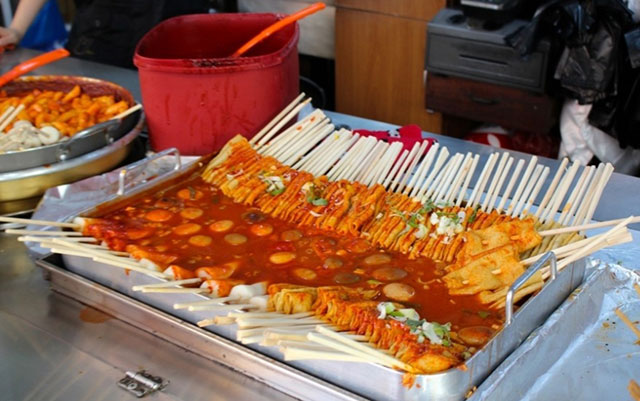
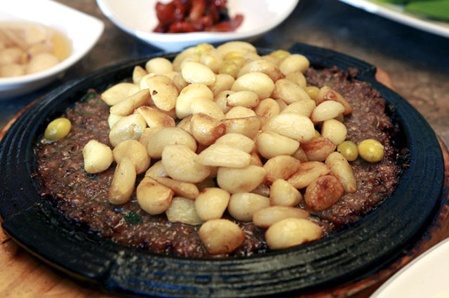
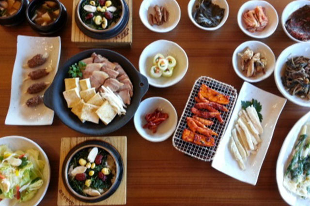
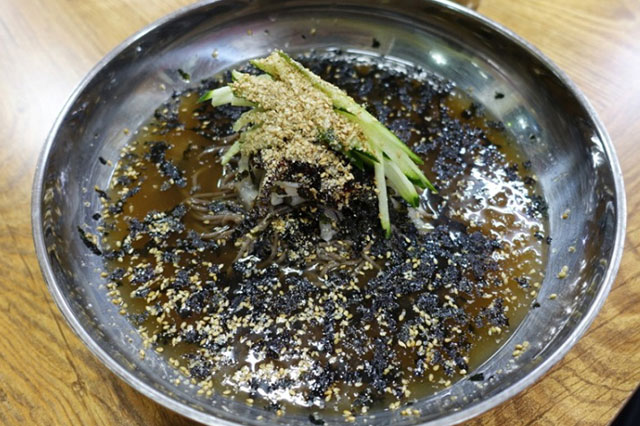

글. 편집실
자료제공. 한국관광공사
청풍호의 물결과 의림지의 고즈넉함 사이, 제천은 자연만큼이나 풍성한 먹거리를 품고 있다. 약초의 고장답게 건강을 생각한 음식부터 시장 골목의 소박한 간식까지, 제천에서만 만날 수 있는 네 가지 맛을 소개한다.

ⓒ 제천시제천 중앙시장을 찾으면 꼭 들러야 할 곳이 있다. 빨간 양념에 물든 어묵꼬치가 김이 모락모락 피어오르는 분식집들이다. 사각 어묵을 접어 꼬치에 꿴 후 매콤하게 양념해 익힌 빨간오뎅은 추운 겨울, 시장을 오가던 사람들의 손과 입을 녹여주던 간식이었다. 이제는 제천을 대표하는 명물이 됐다. 탱글한 식감과 얼얼한 매운맛이 한 번 먹으면 자꾸 생각나는 맛이다.

ⓒ 식신청풍호로 향하는 길목에 떡갈비 전문점들이 모여 있다. 그중 여러 대를 이어온 ‘청풍떡갈비’는 한우로 빚은 떡갈비 위에 구운 마늘을 수북이 올려 낸다. 부드러운 고기와 고소한 마늘, 감칠맛 짙은 양념이 어우러진 맛은 청풍호의 풍경만큼이나 오래 기억에 남는다. 식사 후 청풍호반을 거닐거나 케이블카를 타러 가기 좋은 위치라 여행객들의 발길이 끊이지 않는다.

ⓒ 대한민국 구석구석제천 시내에서 40분 거리, 청정지역에 자리한 농가 맛집이다. 지역 특산물인 더덕을 활용한 특색 있는 음식을 선보이는 곳으로, 2층으로 된 건물에서 아늑한 분위기 속에 식사를 즐길 수 있다. 대표가 직접 만든 양채와 더덕장아찌, 조청, 청, 장류 등의 가공품도 판매한다. 무엇보다 2층 창밖으로 보이는 주변 경관이 일품이다. 테라스에서 차 한 잔을 마시며 전통 농촌 마을의 풍경과 정서를 느낄 수 있어 제천 여행의 특별한 쉼표가 되어준다.

ⓒ 대한민국 구석구석현지인들이 자주 찾는 막국수 맛집이다. 대표 메뉴는 직접 만든 면과 육수, 양념으로 요리한 물막국수다. 메밀 함량이 높아 면발이 쫄깃하고 씹는 맛이 살아있다. 진한 고기 육수에 매콤한 양념이 올라가 시원하면서도 깊은 맛을 낸다. 비빔막국수, 수육, 방울만두도 함께 즐길 수 있다. 큼직한 냉면 그릇에 푸짐하게 담겨 나와 양도 넉넉하다.